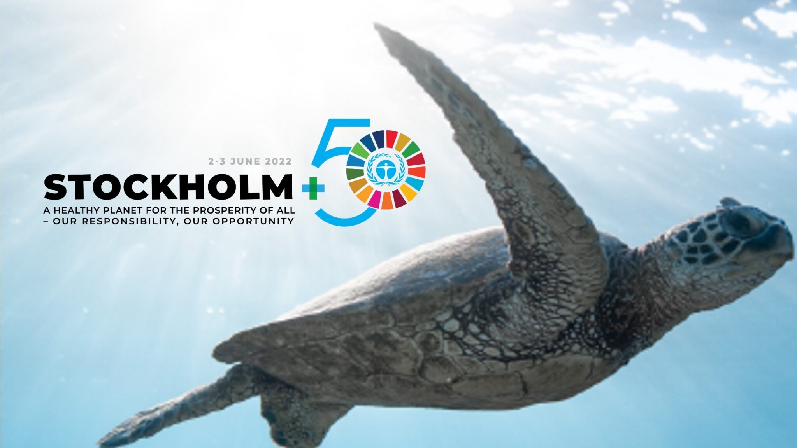

Dispatch from Stockholm

In early June 1972, world leaders met in Stockholm, Sweden for the first-ever global conference on the environment and sustainable development. This past week, the UN system returned to Stockholm after 50 years for a global stock-take on the progress made since then, and to give leaders an opportunity to meet and reestablish momentum behind the sustainable development goals after the major setbacks caused by the COVID-19 pandemic. There certainly has been progress made in the last 50 years. The 1972 conference gave birth to the UN Environment Program (UNEP), which was the first UN agency to be based in the Global South and still does important work today, including the production of landmark scientific assessments like those on climate change. The conference also gave heightened prominence to the role of multilateralism in dealing with environmental issues. As then-Swedish Prime Minister Olof Palme pointed out in his address to the 1972 conference, “the air we breathe is not the property of any one nation…the big oceans are not divided by national frontiers.” The environment does not see borders; we cannot solve the triple planetary crisis of climate change, biodiversity loss, and pollution as individuals or as individual countries. We have to work together.
Of course, “working together” has not exactly characterized environmental action since 1972. For all the multilateral environmental agreements currently in force, the basic social and biophysical aspects of our planetary crisis have only become worse. To be sure, there are examples of success, but they remain few and far between. As a rule, governments have failed to meet treaty obligations, fund key international organizations like UNEP, and maintain our planet’s life support systems. To borrow from Secretary General António Guterres’ opening remarks on Thursday, “we must act on these commitments. Otherwise they are nothing but hot air. And hot air is killing us.”
Although no significant decisions will be made in Stockholm this week, the occasion has provided an opportunity for some governments and civil society groups to put forward proposals that, they hope, might end up being more than hot air. Here are just a few.
A fossil fuel non-proliferation treaty
The incredibly wide gap between the climate action we need and the outcomes of climate negotiations in the UN system has led some in civil society to push for a fossil fuel non-proliferation treaty. Proponents say that the treaty would provide the legal architecture necessary to achieve the Paris Agreement target of limiting warming to “well below 2 °C.” With the active and destructive proliferation of fossil fuels around the world, non-proliferation would certainly be a step in the right direction. And current treaties are not delivering. At COP26 in Glasgow, a now-notorious last minute text change meant that countries only agreed to “phase down” coal, rather than phasing it out; the only mention of fossil fuels had to do with “inefficient fossil fuel subsidies.” Slightly less coal and a more economically efficient fossil fuel sector can hardly be called progress. After three decades of climate negotiations, greenhouse gas emissions are still on the rise and fossil fuel companies are still investing in new exploration, extraction, and transport infrastructure at levels wildly incompatible with limiting climate warming to 1.5 °C above pre-industrial levels. Ending the proliferation of fossil fuels is a worthy goal.
The human right to a clean, healthy, and sustainable environment
While a number of countries already recognize the human right to a clean, healthy, and sustainable environment, that right is not currently recognized under international law. That might be about to change. Last October, the UN Human Rights Council officially recognized the right to a clean, healthy, and sustainable environment and invited the General Assembly to consider the issue at its next meeting, which will take place this September. The most direct path for this right to become legally binding will be for it to be recognized as a substantive condition for the fulfillment of other human rights already protected under international law. The human right to water, which was recognized by the UN General Assembly in 2010, followed a similar path. Before the right to water was recognized, the Economic and Social Council paved the way for that recognition by submitting a comment arguing that water is a substantial requirement for the rights to health, housing, food, and life. The proponents of the right to environment are hoping for a similar outcome in September.
Ecocide law
Ecocide, defined as “unlawful or wanton acts committed with knowledge that there is a substantial likelihood of severe and widespread or long-term damage to the environment being caused by those acts,” remains legal in most jurisdictions. The Stop Ecocide campaign wants to change that, and while they are working with some national parliaments to establish domestic prohibitions on ecocide, their chief target is the International Criminal Court (ICC) at The Hague. The ICC is dedicated to holding individuals accountable for the very worst crimes—genocide, crimes against humanity, war crimes, and aggression—but none of these offenses sufficiently account for the rights of nature or the harm that comes to human beings when nature is damaged. That is why a growing coalition is working to add ecocide as a crime under the Rome Statute, which would make it a prosecutable offense by the ICC. Doing so would make the large-scale destruction of nature illegal for nationals of, or those who would commit crimes in, 123 countries around the world, an important first step in reversing current ecocidal trends. While the ecocide law’s prospects are probably not great, the movement has certainly gained ground over the last ten years. It has played a very prominent role in discussions at Stockholm+50 and was one of the key demands made in the interfaith statement to the conference assembly, which was signed by around 240 faith-based organizations and presented in plenary on Friday.
Universal declaration of ocean rights
A second proposal that seeks to protect the rights of nature is a universal declaration of ocean rights. A rights-based approach to ocean governance first won broad support at the 2017 UN Ocean Conference, where 32 countries signed on to a proposal that international ocean governance proceed according to a rights-based framework in order to counteract the purely extractive approach used to date in documents like the UN Convention on the Law of the Sea (UNCLOS). Now, a new proposal from The Ocean Race would see these rights enshrined in a standalone legal instrument, a goal they would like to achieve by 2030, when the UN Ocean Decade comes to a close.
Global treaty on plastic pollution
The global treaty on plastic pollution is one of the more mature initiatives in the air at Stockholm this week. The UN Environment Assembly voted in February to begin negotiations on a legal instrument that would be legally binding, a task they hope to complete by 2024. Negotiations began this week in Dakar, Senegal. Attendees at Stockholm who had arrived directly from Dakar reported that there was significant contention over procedural questions, which are crucial to creating the conditions required to produce an agreement that is ambitious, binding, and enforceable, a rare achievement in international law. As a representative from WWF pointed out at Stockholm this week, “the devil is in the details.” Constructing a good treaty with consistent international standards will do much to determine future plastic production. This treaty cannot come soon enough. A group of 14 scientists published a study in January of this year that showed the world is already outside the safe operating space for plastics and other pollutants. Plastic debris litter the ocean, starve marine life, and are even found in microscopic form in the food we eat and the air we breathe. Managing plastic pollution on a global level, including the development of circular economies and source-to-sea solutions is an obvious, and obviously urgent, next step.
While the treaty on plastic pollution and the human right to a clean and healthy environment are well-positioned to achieve legal force relatively soon, it is likely that the other proposals will not gain that status. That does not mean they are failures. The fact that governments and civil society are even discussing the rights of nature represents a marked shift away from the anthropocentric environmental ethics that prevailed just a few years ago. It is worth noting, however, that all of these proposals are limited by their reliance on the very system that has reproduced the environmental and social crisis over the last 50 years. While we will not build a just and sustainable future without multilateralism, the spiritual, economic, and social conversion required by that future will never be implemented by treaties alone. And the treaties we really need will never be negotiated, signed, and ratified until those deeper reforms are already underway.
This post was originally shared on the JENA Blog.